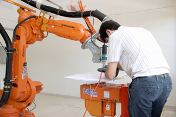
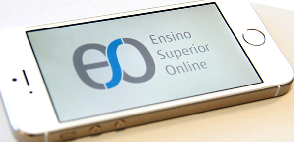

Pesquisa
esta forma, uma sólida cultura de pesquisa que surge na UCL é conseguida através da promoção de um
ambiente favorável à produção científica, cuja responsabilidade é da Coordenação Geral de Pesquisa e
Laboratórios, por meio do estímulo à ampliação e qualificação das atividades de iniciação científica e
tecnológica junto aos alunos dos seus cursos de graduação, do apoio à consolidação de grupos de pesquisa
e da formação dos seus professores, do incentivo à apresentação de trabalhos científicos em eventos,
pelo estímulo à divulgação e socialização dos resultados das pesquisas desenvolvidas, pelo apoio à
produção científica qualificada, e pela constante busca da integração entre ensino, pesquisa e extensão
e, pela mobilização crescente de grupos de docentes pesquisadores na montagem de propostas de
pós-graduação, cursos de extensão, sempre que possível envolvendo o corpo discente e de negócios de base
tecnológica, focados na inovação e desenvolvimento tecnológico, articuladas às linhas de pesquisa que
passaram a ser priorizadas. Tais ações repercutirão de forma positiva nas atividades de ensino e
extensão, fazendo com que os professores, alunos e comunidade possam usufruir dos resultados gerados.
São as metas para o desenvolvimento do trabalho científico na UCL:
a) Programa de Iniciação Científica e Tecnológica
Tem como objetivo servir de incentivo à formação científica ou tecnológica, pela participação em
projetos de pesquisa com qualidade acadêmica, mérito científico e orientação adequada estabelecendo as
metas a seguir detalhadas.
– Ampliar o número de alunos de graduação atuando em projetos de pesquisa via ampliação do número de
bolsas de Iniciação Científica e Tecnológica, provenientes de agências de fomento ou por intermédio de
recursos próprios.
– Incentivar a iniciação científica e tecnológica, promovendo a qualificação de acadêmicos bolsistas ou
voluntários, através de cursos de capacitação em temas relacionados à pesquisa, através de oficinas
gratuitas, encontros, palestras ou seminários.
– Estimular a participação voluntária dos alunos de graduação nas atividades de pesquisa e extensão
desenvolvidas pelos grupos de pesquisa.
b) Formação de grupos de pesquisa
Visa às áreas de atuação da Instituição, bem como o fortalecimento de áreas prioritárias estabelecidas,
potencializando a missão institucional e a inserção da UCL no contexto regional. Para isso, a UCL tem
como metas:
– Estimular, apoiar e avaliar a produção científica e tecnológica dos grupos de pesquisa, à luz dos
critérios da política nacional de pesquisa e pós-graduação bem como, frente à missão institucional.
– Manter os grupos de pesquisa atualizados e dinâmicos na sua produção científica, estimulando-os a
projetarem sua consolidação.
– Qualificar a produção científica da UCL por meio da integração dos grupos de pesquisa visando
congregar potencialidades em áreas estratégicas importantes no cumprimento de sua missão.
– Estimular redes de colaboração entre integrantes dos grupos de pesquisa, através da construção
cooperativa de projetos de pesquisa e extensão, visando aprimorar a qualidade dos projetos e a formação
dos envolvidos.
– Realizar encontros periódicos dos Grupos de Pesquisa objetivando estimular a integração, possibilitar
a análise, o debate crítico e a socialização interna dos resultados dando visibilidade as atividades de
pesquisa e de extensão realizadas.
– Articular e apoiar o relacionamento dos pesquisadores com agências de fomento, de forma a garantir o
pleno desenvolvimento das atividades de pesquisa.
c) Integração da UCL com o Estado e municípios da região
Fazer com esta meta que o avanço da ciência, tecnologia e inovação na UCL contribua para o
desenvolvimento regional sustentável. Para realizar tal objetivo, as metas são:
– Acompanhar e participar dos programas de pesquisa que visam à superação das desigualdades regionais,
com ênfase no desenvolvimento da região de abrangência, sem perder de vista a inclusão social.
– Promover e apoiar o estabelecimento de parcerias, através do estabelecimento de convênios com
empresas, instituições e órgãos públicos, locais e regionais, para o desenvolvimento de pesquisa,
conforme necessidades das mesmas e potencialidades da Instituição.
– Consolidar instrumentos para difusão e divulgação dos resultados das pesquisas realizadas pela
Instituição, junto à sociedade.
d) Revitalização da política institucional de capacitação docente.
Coordenar junto com a Diretoria Acadêmica e Diretoria Administrativa a capacitação dos docentes da
instituição prevendo sua sustentabilidade e regulamentando compromissos recíprocos.
– Lançar, de acordo com as necessidades da UCL, edital específico contendo número de vagas, modalidades
e critérios atendendo necessidades/prioridades institucionais.
– Acompanhar o desempenho dos docentes participantes do Plano de Capacitação através da análise de
relatórios, produção acadêmica e visitas.
LINHAS DE PESQUISA
O projeto UCL foi concebido para ter como missão contribuir com o desenvolvimento regional através da
oferta de educação superior de qualidade, proporcionando aos jovens uma formação que os habilite a gerar
e/ou aproveitar as oportunidades de trabalho surgidas nesse contexto de alta exigência de qualificação,
para que cresçam como profissionais e cidadãos. Assim sendo, a Pesquisa Científica Aplicada é o ramo da
Ciência que a UCL concentra seus esforços. A UCL acredita que a Ciência Pura é muito importante para a
sociedade, mas foca na Ciência Aplicada pois crê que assim pode contribuir de forma mais efetiva ao
desenvolvimento nosso País e Estado, já que os resultados são mais imediatos.
Atualmente a UCL tem uma série de pesquisas acontecendo em suas instalações e fora delas, com recursos
próprios, financiados por órgãos de fomento Federais, Estaduais ou provenientes da Iniciativa Provada,
atuando isoladamente ou através de parcerias com outras Instituições de Ensino ou de Pesquisa.
A relação completa de tais pesquisas realizadas e/ou em andamento podem ser vistas no Anexo 1 deste
relatório, onde aparecem, por exemplo, as pesquisas com o objetivo de otimizar o uso de energia dos
prédios da UCL, usando conceitos de Automação Predial, uso de Placas Fotovoltaicas para geração de
energia elétrica para alimentação de uma bomba de irrigação e dos trabalhos que envolveram a criação de
protótipos através de máquinas CNC (Comando Numérico Computadorizado) desenvolvidas na própria UCL e
impressoras 3D, como o caso do trabalho desenvolvido por alunos Holandeses que fizeram seu TCC (Trabalho
de Final de Curso) na UCL, porém serão enfatizadas aqui três grupos de pesquisa que acontecem na
Instituição como cases de sucesso:
FLUIDOS E FENÔMENOS DE TRANSPORTE - PETRÓLEO E GÁS
O LFFT – Laboratório de Fluidos e Fenômenos de Transporte da UCL realiza pesquisas no setor
pertinente ao seu escopo de atuação com recursos que são provenientes da FAPES, FINEP e/ou PETROBRAS
no período de 2005 até hoje. Os recursos obtidos até o momento não se destinaram à construção ou
adequação de infraestrutura, mas para a aquisição de equipamentos, instrumentação e pagamento de
pessoal para realização do projeto.
Os temas abordados, até o momento, foram:
Tópicos em controle e escoamento de fluidos e particulados durante a perfuração de poços em águas
profundas. Convênio 2010-2014. CENPES/Petrobras.
Estudo da suspensão de cascalhos em poços horizontais: “Quantificação do efeito da rotação na
suspensão de cascalhos em poços elípticos” e “Efeito da reologia do fluido e da granulometria na
quantificação da tensão cisalhante de arraste de cascalhos sedimentados em um canal fechado”.
Contrato 2007-2009. CENPES/Petrobras.
Determinação da tensão de cisalhamento para arraste de cascalho em poços horizontais. 2007-2009.
FAPES.
Estudo da suspensão de cascalhos em poços horizontais: “Quantificação do efeito da rotação na
suspensão de cascalhos” e “Determinação da tensão de cisalhamento para erosão de leito de cascalho
sedimentado em poços horizontais”. Contrato 2005-2007. CENPES/Petrobras.
Serviço de caracterização de cascalho, de amostras de calha e gotas de emulsão. Contrato 2007.
CENPES/Petrobras.
Deslocabem – Projeto UCL/PUC-RJ. Convênio 2006-2008. FINEP via CENPES/Petrobras.
Estudo da suspensão de cascalhos sedimentados em poços horizontais. 2005-2006. FAPES.
A instituição conta com infraestrutura para investigação, com os devidos controles de variáveis,
semelhante em outros laboratórios de Universidades da região Sudeste. Assim, o LFFT pode realizar os
estudos com uma maior atenção aos métodos e resultados a serem alcançados, conforme a necessidade
das instituições de fomento.
O investimento total para realização dos projetos foi da ordem de R$ 1.900.000,00 e teve vários
impactos positivos sobre a UCL. Dentre os impactos, pode-se citar que:
Propiciou a aquisição de equipamentos, instrumentação e montagens experimentais que foram utilizadas
no projeto aplicado e poderão ser utilizados em estudos futuros pelo corpo docente e discente em
projetos isolados ou em parcerias com a Petrobras e a Universidade Federal do Espírito Santo.
Adequou a instrumentação existente e as novas às necessidades de rastreabilidade, por meio de
calibração em laboratórios acreditados pelo INMETRO, conforme NBR ISO/IEC 17025, garantindo assim
uma maior confiabilidade aos resultados obtidos nas medições laboratoriais.
Possibilitou a formação de recursos humanos com vivência experimental em um laboratório de alto
nível, com inserção de valores importantes para a vida profissional dos discentes envolvidos. Dentre
os discentes envolvidos diretamente ou indiretamente no projeto, mas que estiveram no LFFT durante a
realização do projeto de pesquisa em questão, pode-se destacar uma forte influência para a formação
científica, que pode ser comprovada pelo encaminhamento destes discentes a programas de
pós-graduação stricto sensu, principalmente na UFES. A seguir, é apresentada a relação dos discentes
da UCL, que estiveram no LFFT e que já concluíram seus programas de pós-graduação ou estão com o
mesmo em andamento, assim como a instituição em que o curso de pós-graduação está atrelado.
Breno de Almeida Dornellas (MSc Eng. Mecânica/UFES)
David de Almeida Fiorillo (MSc Automação/UFES – Doutorando UnB)
Lucas Silveira da Silva (MSc Eng. Mecânica/UFES)
Luila Abib Saidler (Mestranda na área de Energia/UFES)
João Pedro Quirino Filho (Mestrando na área de Automação/UFES)
Aline Cristina Silva dos Anjos (Mestranda na área de Eng. Mecânica/UFES)
Míriam Klippel (Mestranda na área de Eng. Mecânica/UFES)
Gabriel Rodrigues Dockhorn (Mestrando na área de Eng. Mecânica/UFES)
Thiago Amorim Fiorotti (Mestrando na área de Química/UFES)
Eduardo Calegário Coelho (Mestrando na área de Eng. Mecânica/UFES)
Michell Luiz Costalonga (Mestrando na área de Eng. Mecânica/UFES)
Para as conveniadas, o projeto possibilitou também uma série de impactos positivos em termos de
produtos, ou resultados, podendo destacar:
Desenvolvimento de uma montagem experimental e método de ensaio para determinação de velocidade de
sedimentação de material particulado em fluidos não newtonianos e opacos;
Desenvolvimento de uma montagem experimental e método de ensaio para investigação da eficiência de
polímeros e surfactantes na capacidade de redução arraste em operações de gravel pack;
Obtenção de relação funcional entre a taxa de suspensão de cascalhos e a rotação de coluna, em
trecho horizontal, para poços delgados, com a possibilidade de utilização em modelos numéricos de
previsão. Além dos projetos internos, o LFFT contribuiu para a sociedade acadêmica com publicações
em congressos.
Cabe ressaltar que o LFFT tem se aproximado do Núcleo de Termociências para a Indústria de
Petróleo/Departamento de Engenharia Mecânica da UFES, para execução de projetos futuros, além de que
a ANP (Agência Nacional do Petróleo, Gás Natural e Biocombustíveis) credenciou este laboratório para
prestação de serviços tecnológicos, pesquisa e desenvolvimento nas áreas de Exploração,
Desenvolvimento e Produção do setor de Petróleo e Gás. O credenciamento abrange as seguintes
atividades:
Estudo de Limpeza de Poços Horizontais;
Estudo de Velocidade de Sedimentação e Caracterização de Partículas Irregulares;
Caracterização Reológica de Fluidos não newtonianos;
Estudo de Utilização de Materiais Alternativos na engenharia de Poços de Petróleo;
Simulação Numérica de Escoamentos Complexos; e
Automação e Controle em Termociências.
REAPROVEITAMENTO DE RESÍDUOS DO APL DE ROCHAS ORNAMENTAIS
Nesta linha de pesquisa, a UCL conta com duas vertentes:
1) Aproveitamento de resíduos finos e
2) Aproveitamento de resíduos maiores, entre 200 e 500kgf. No que se refere ao aproveitamento de
resíduos finos, a UCL contou com o projeto Concretar, realizado no Laboratório de Materiais da UCL,
cujo título é “Utilização de resíduos do beneficiamento de rochas ornamentais em artefatos
pré-fabricados de concreto”.
O projeto Concretar teve como objetivo principal a produção de artefatos pré-fabricados de concreto,
através do estudo das propriedades físicas e mecânicas e da reologia e microestrutura do concreto
com incorporação do resíduo do beneficiamento de rochas ornamentais. Para isso, teve como metas:
Pesquisar o estado da arte sobre a utilização de Resíduo do Beneficiamento de Rochas Ornamentais
(RBRO) em artefatos pré-moldados de concreto;
Caracterização dos materiais;
Estudar a influência do uso do resíduo em artefatos pré-fabricados de concreto através de suas
características físicas e mecânicas;
Produzir artefatos pré-fabricados de concreto que atendam aos parâmetros das normas brasileiras;
Estudar a influência do uso do resíduo em artefatos pré-fabricados de concreto através de suas
características reológicas e de microestruturas;
Auxiliar na minimização do impacto ambiental causado pelo descarte do RBRO;
Avaliação econômica e comparativa com os diferentes materiais analisados.

Este projeto contou com o financiamento de recursos através do FINEP, SEBRAE e MCT, além de
parcerias com microempresas deste APL. Obteve várias publicações e possibilitou o surgimento da
prestação de serviços de controle tecnológico de materiais de construção civil. Hoje, através de
resultados desta pesquisa, realiza a consultoria e ensaios de materiais, com alta qualidade
tecnológica, dispondo de equipamentos e metodologias compatíveis com as mais rígidas normas para
este setor. As condições das amostras são controladas remotamente, com relatórios online das
condições de temperatura e umidade, essenciais para a realização de ensaios verossímeis.
O Brasil é um grande consumidor, produtor e exportador de rochas ornamentais. A abundância e
diversidade de rochas brasileiras tornaram o país um importante exportador de mármore, granito e
outros tipos de rochas ornamentais. No entanto, essa indústria gera grande quantidade de resíduos
sólidos, incluindo pequenos pedaços de rochas, entre 200kgf e 1ton, que são difíceis de processar
com máquinas tradicionais. Se a indústria for capaz de processar essas peças, poderia aumentar os
seus lucros e reduzir o seu impacto ambiental ao mesmo tempo. Para resolver este problema houve a
pesquisa intitulada “Sistema Robotizado para Usinagem Tridimensional Complexa de Rochas
Ornamentais”, conhecido como projeto Michelangelo.
O projeto Michelangelo consiste em um sistema de usinagem robótica (veja esquema abaixo) que obtém a
imagem tridimensional de uma peça, seja através da digitalização de uma peça existente (1), ou
obtida através de um software CAD. Caso a peça (1) seja uma peça real, esta será digitalizada
através de um sistema de digitalização tridimensional (2). Depois de obtida a imagem vetorial e 3D
da peça, esta será interpretada pelo software de interface e convertida em sinais de comando de
usinagem na estação de trabalho (3), e enviada ao robô manipulador industrial (4), que juntamente
com a mesa posicionadora (6), possibilitará a usinagem da peça final (5) em algum tipo de rocha
ornamental.
Alguns resultados dos testes de usinagem tridimensionais, relativos à comprovação de formas, podem
ser vistos nas figuras nesta página.
Entretanto, por se tratar de uma aplicação muito recente, sem precedentes no Brasil, houve a
necessidade de realizar ensaios de usinagem em rochas especificamente, com o objetivo de obter
parâmetros de usinagem, já que estes não estão disponíveis na bibliografia para esta aplicação.
Sendo assim, foi publicado um artigo no Congresso Brasileiro de Automática de 2014, a fim de mostrar
à comunidade científica brasileira os resultados desta pesquisa.
NOVAS TECNOLOGIAS PARA FACILITAR O PROCESSO DE ENSINO/ APRENDIZAGEM
A UCL tem uma forte preocupação em relação à qualidade dos serviços de ensino, pesquisa e extensão
prestados à comunidade. Neste sentido, investe recursos constantes para o aprimoramento das técnicas
de ensino/ aprendizagem, visando assim melhorar tais serviços.
E-READERS
Com esta visão, foi a primeira IES a comprar eReaders do tipo Kindle para disponibiliza-los na
biblioteca com o objetivo de facilitar o acesso dos alunos a eBooks, ou seja, livros virtuais. Além
disso, desenvolveu uma ferramenta computacional que permite que exames ou provas sejam aplicados
usando esta tecnologia. Tais exames hoje são aplicados na UCL, desde 2009, averiguando os
conhecimentos obtidos pelos alunos relativos a todo conteúdo do semestre. Esta avaliação, conhecida
na UCL como exame semestral, é constantemente elogiada por todas as comissões de avaliação,
reconhecimento e autorização do INEP/MEC que vêem na UCL realizar suas avaliações.

A ESO é uma iniciativa sem fins lucrativos, criada na UCL, cuja missão é oferecer o melhor ensino
superior, com cursos em português do Brasil para estudantes de todo o mundo. Os cursos on-line
atendem às disciplinas da graduação, pós-graduação e extensão, e podem ser usados no ensino
presencial, semipresencial ou a distância.
A plataforma ESO atua no apoio do processo de ensino aprendizagem para as disciplinas que compõem as
matrizes curriculares de engenharia da faculdade UCL. E sendo uma plataforma aberta, outras IES
(Instituições de Ensino Superior) são convidadas e encorajadas a elaborar os seus cursos dentro da
ESO, com o apoio de suas IES parceiras. Alguns cursos da plataforma também são abertos ao público
geral, podendo atuar como MOOC (Massive Open Online Course) se este for o objetivo do curso e a
estratégia da IES.
A ESO utiliza o Open edX, que é uma plataforma de aprendizagem on-line aberta, em que
desenvolvedores de todo o mundo estão trabalhando para trazer educação de qualidade aos estudantes.
A plataforma Open edX foi criada por MIT e Havard e disponibilizada a comunidade científica, oriunda
da plataforma edX, que suporta atualmente milhares de estudantes em todo o mundo. Atualmente ela já
é classificada como uma das melhores plataformas de ensino aprendizagem on-line do mundo.
A estratégia de ensino da ESO, consiste em cursos extremamente dinâmicos e interativos e sua
distribuição de conteúdo é feita utilizando vídeos intercalados com exercícios de verificação, e com
exercícios de fixação ou tarefas, simples ou complexas para cada seção do conteúdo. Para os vídeos
da ESO utilizam-se vídeos em português livres ou próprios com boa qualidade e de curta duração por
assuntos, para garantir a atenção do estudante e a evolução de seu aprendizado, conforme o seu ritmo
de estudo.
O principal diferencial da plataforma é permitir a elaboração de atividades complexas,
parametrizadas e randomizadas para cada aluno, dando um feedback imediato a resposta do estudante,
disponibilizando inclusive o processo de resolução daquela atividade. As atividades podem incluir
laboratórios simulados, questões objetivas, discursivas, expressões matemáticas, jogos simulados
entre diversos outros tipos de questões.
A comunicação através do fórum de discussão social de cada um dos cursos da ESO, permitem a
interação do conhecimento entre os estudantes, monitores, tutores e professores. Outras atividades
de interação em tempo real também são incentivadas, como por exemplo: Chats e Vídeos Conferência
entre os envolvidos no curso.
Os cursos de Introdução ao Cálculo (Módulo 1 a 5) que consiste de uma revisão da matemática de todo
o ensino médio, é oferecido gratuitamente na forma on-line para estudantes do ensino médio para que
possam chegar a faculdade melhor preparados, para seguir com sucesso a carreira acadêmica na área de
exatas.
Com a aplicação da ESO no ensino, observar-se resultados interessantes na mudança de comportamento
dos estudantes, principalmente na desconstrução da cultura de estudar somente para a PROVA e não
estudar para aprender para a vida, algo já herdado tanto do ensino fundamental quanto do ensino
médio. A plataforma ESO incentiva os alunos a estudarem diariamente transformando-os em verdadeiros
agentes ativos do processo de ensino-aprendizagem.